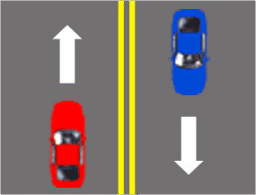
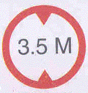

Pass mark is 12 out of 20 (60%). As soon as you hit 12 correct, you pass immediately!
తెలుగు: పాస్ మార్కు 20కి 12 (60%). 12 సరైన సమాధానాలు రాగానే పరీక్ష పాస్ అయిపోతారు! हिन्दी: पास होने के लिए 20 में से 12 (60%) अंक चाहिए। 12 सही होते ही आप तुरंत पास हो जाएंगे!
2
Circles = Mandatory Orders (Red border = Stop/No, Blue background = Must do). Triangles = Warnings (Caution). Rectangles = Information.
తెలుగు: సర్కిల్ = తప్పనిసరి ఆర్డర్లు (ఎరుపు సరిహద్దు = వద్దు, నీలం = తప్పక చేయాలి). త్రిభుజం = హెచ్చరికలు. దీర్ఘచతురస్రం = సమాచారం. हिन्दी: गोला = अनिवार्य आदेश (लाल बॉर्डर = निषेध, नीला = अवश्य करें)। त्रिकोण = चेतावनी। आयत = जानकारी।
3
Pedestrians ALWAYS have the right of way at uncontrolled pedestrian / zebra crossings.
తెలుగు: పాదచారులకు జీబ్రా క్రాసింగ్ వద్ద ఎల్లప్పుడూ మొదటి ప్రాధాన్యత (Right of Way) ఉంటుంది. हिन्दी: जेब्रा क्रॉसिंग पर पैदल यात्रियों को हमेशा पहला अधिकार (Right of Way) होता है।
4
Overtaking must ALWAYS be done from the RIGHT side. Overtaking from the left is only permitted if the vehicle ahead signals a right turn and moves to the road center.
తెలుగు: ఓవర్టేకింగ్ ఎల్లప్పుడూ కుడి వైపు నుంచే చేయాలి. ముందు వాహనం కుడి వైపు తిరిగే సంకేతం ఇచ్చి రోడ్డు మధ్యలోకి వస్తేనే ఎడమ నుండి ఓవర్టేక్ చేయవచ్చు. हिन्दी: ओवरटेकिंग हमेशा दाईं ओर से ही की जानी चाहिए। केवल तभी बाईं ओर से कर सकते हैं जब आगे वाला वाहन दाईं ओर मुड़ने का संकेत दे रहा हो।
5
On steep hills / slopes, vehicles travelling UPHILL have priority over vehicles travelling downhill.
తెలుగు: కొండ ప్రాంతాల్లో పైకి ఎక్కే వాహనాలకు మొదటి ప్రాధాన్యత ఇవ్వాలి (కిందికి దిగే వాహనాలు ఆగాలి). हिन्दी: पहाड़ी ढलानों पर ऊपर चढ़ने वाले वाहनों को नीचे उतरने वाले वाहनों पर प्राथमिकता होती है।
తెలుగు: అత్యవసర ఫోన్ నంబర్లు: పోలీస్ = 100, అంబులెన్స్ = 108, ఫైర్ = 101. हिन्दी: आपातकालीन नंबर: पुलिस = 100, एम्बुलेंस = 108, फायर = 101।
7
Valid Learner's Licence is valid for 6 months (180 days). You can apply for a permanent licence after 30 days.
తెలుగు: లెర్నర్స్ లైసెన్స్ (LLR) కాలపరిమితి 6 నెలలు (180 రోజులు). 30 రోజుల తర్వాత శాశ్వత డ్రైవింగ్ లైసెన్స్ కోసం దరఖాస్తు చేసుకోవచ్చు. हिन्दी: लर्नर लाइसेंस (LLR) 6 महीने (180 दिन) के लिए वैध होता है। 30 दिन बाद पक्के लाइसेंस के लिए आवेदन कर सकते हैं।
8
White Stick carried by a pedestrian indicates that the person is BLIND.
తెలుగు: చేతిలో తెల్లటి కర్ర పట్టుకుని రోడ్డు దాటే వ్యక్తి అంధుడు (Blind) అని అర్థం. हिन्दी: सफेद छड़ी लेकर चलने वाला व्यक्ति दृष्टिहीन (नेत्रहीन) होता है।
9
Solid Yellow/White Lines: You MUST NOT cross to overtake or make a U-turn. Stay strictly in your lane.
తెలుగు: రోడ్డుపై నిరంతర పసుపు/తెల్లటి గీత ఉంటే ఎట్టి పరిస్థితుల్లోనూ ఓవర్టేక్ లేదా యూ-టర్న్ చేయకూడదు. हिन्दी: सड़क पर लगातार पीली/सफेद लाइन को ओवरटेक या यू-टर्न के लिए पार नहीं कर सकते।
10
Amber light at a traffic signal: Stop before the stop line unless you are so close that stopping suddenly would cause an accident.
తెలుగు: పసుపు (ఆంబర్) లైట్: స్టాప్ లైన్ వద్ద ఆగడానికి సిద్ధం కావాలి. అప్పటికే లైన్ దాటి ఉంటేనే సురక్షితంగా వెళ్లాలి. हिन्दी: पीली (एम्बर) बत्ती: स्टॉप लाइन से पहले रुकें, जब तक कि अचानक रुकने से दुर्घटना का खतरा न हो।
Driver Hand Signals, Traffic Police Signals & Road Markings
Police Signal
Police Signal: STOP Oncoming Traffic
Right hand raised vertically with palm facing oncoming traffic — vehicles approaching from the front must stop.
Police Signal
Police Signal: STOP Before Stop Line
Both arms extended or signaling front & rear traffic to halt behind the white stop line at an uncontrolled junction.
Driver Hand Signal
Driver Turning Left
Right arm extended horizontally outside the vehicle and rotated anti-clockwise to signal a left turn.
Driver Hand Signal
Driver Turning Right
Right arm extended horizontally outside the right side with palm facing forward.
Driver Hand Signal
Driver Intends to STOP
Right arm raised vertically upward (bent at elbow at 90 degrees) with palm facing forward.
Driver Hand Signal
Driver Slowing Down
Right arm extended horizontally and moved slowly up and down with palm facing downward.
Driver Hand Signal
Driver Giving Way to Overtake
Right arm extended and waved forward from back to front in a semi-circular motion, inviting vehicles behind to overtake safely.

Road Marking
Double Solid Lines (Strictly No Crossing)
You MUST NOT cross double solid white/yellow lines to overtake or make a U-turn.
Tricky Twins: Commonly Confused Road Signs
No Parking vs No Stopping / Standing

No Parking (1 Diagonal Slash)
You cannot leave your vehicle unattended. However, momentarily picking up or dropping off a passenger is allowed.
No Stopping or Standing (Crossed 'X' Slashes)
STRICTEST BAN: You cannot even pause, idle, or drop someone off for a single second. Common on flyovers and busy intersections.
Memory Hook: 1 Slash = No Parking. Cross 'X' = Nothing allowed (No Stop, No Stand).
Guarded vs Unguarded Level Crossing
Guarded Level Crossing (Fence Symbol)
Has a railway gate and watchman. Wait for the gate to open safely.
Unguarded Level Crossing (Steam Engine Symbol)
NO GATE OR WATCHMAN! Driver must mandatory stop, look both directions, listen, and proceed only when 100% clear.


 No Stopping or Standing (Crossed 'X' Slashes)
No Stopping or Standing (Crossed 'X' Slashes)
 Guarded Level Crossing (Fence Symbol)
Guarded Level Crossing (Fence Symbol)
 Unguarded Level Crossing (Steam Engine Symbol)
Unguarded Level Crossing (Steam Engine Symbol)
 Height Limit (3.5M with Vertical Arrows)
Height Limit (3.5M with Vertical Arrows)
 Width Limit (2M with Horizontal Arrows)
Width Limit (2M with Horizontal Arrows)